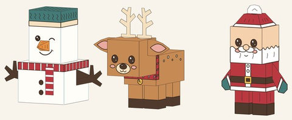
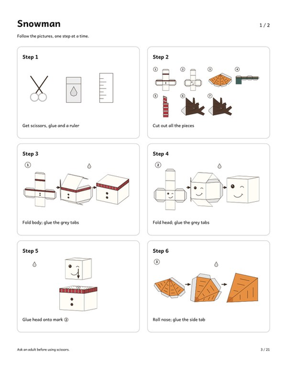
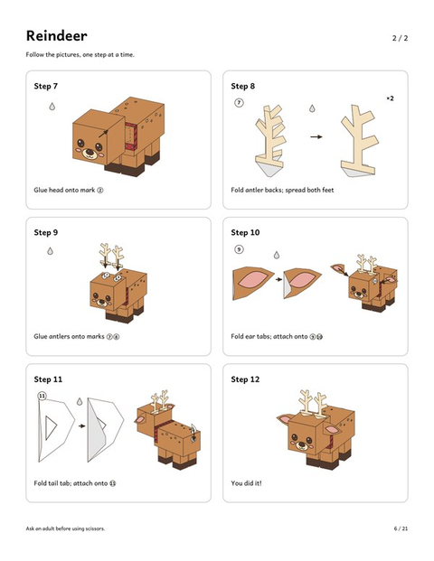
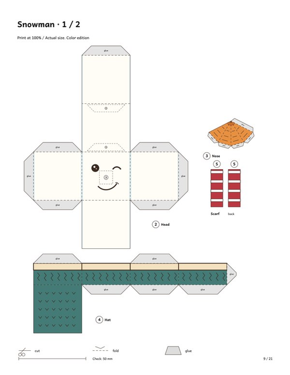
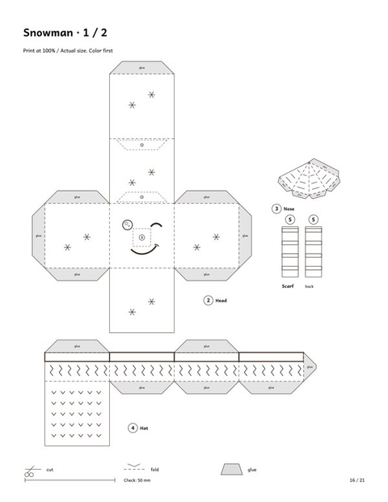
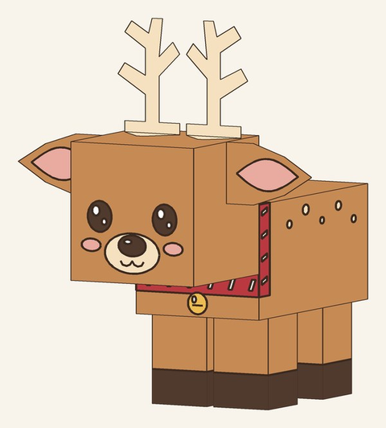
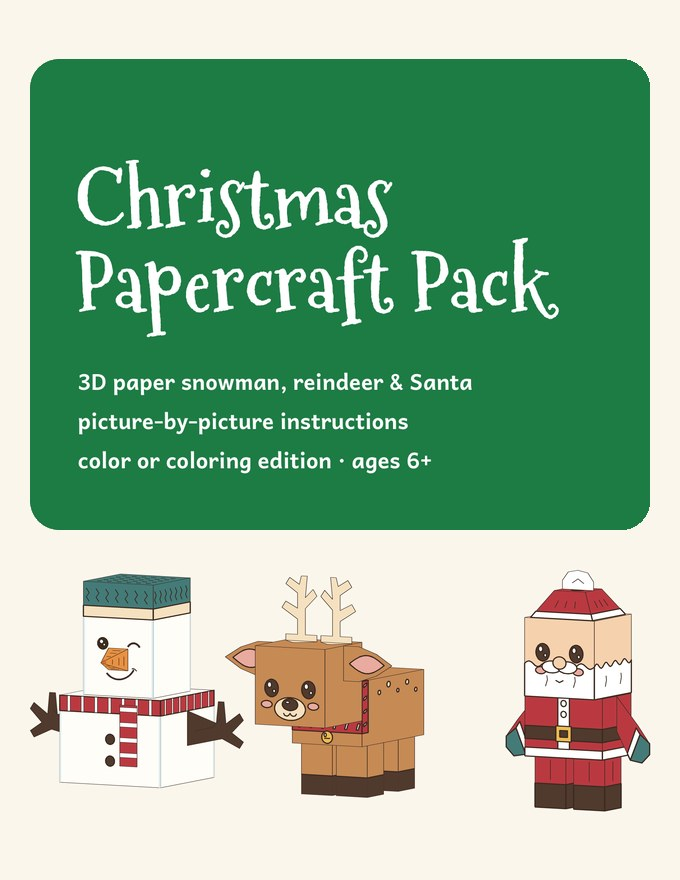

Christmas Papercraft for Kids
3D paper snowman, reindeer & Santa · picture-by-picture steps · ages 6+
Most paper craft templates come with a page of small text that kids can't follow. Ours work like building-block instructions: every figure has 12 small picture steps — cut, fold, glue — and each piece is numbered in the order you use it.
Younger kids (6+) can build them with a little help from an adult for the cutting.
Start with the snowman — it's free:
⬇ Download the free 3D paper snowman (US Letter PDF) ⬇ Download the free 3D paper snowman (A4 PDF)Free PDF includes:
- Picture-by-picture instructions (12 steps)
- Color template on 2 pages
What's inside the pack






The pictures show 3D renders of the finished figures, so you can see exactly what you'll build.
Christmas Papercraft Pack

- 3D paper snowman, reindeer and Santa
- Picture-by-picture instructions — 12 small steps per figure, almost no text
- Color edition + coloring edition (color first, then build)
- US Letter & A4 · 21 pages · instant PDF download
$7.00
Get the Christmas Papercraft Pack →Tips for a smooth build
- Print at 100% ("Actual size"), on thicker paper if you have it (160–200 gsm cardstock).
- A glue stick is enough; use a ruler and a blunt knife to crease the fold lines.
- Grown-ups cut the smallest pieces; kids do the folding and gluing.
- The coloring edition is perfect for a class party: color first, then build.